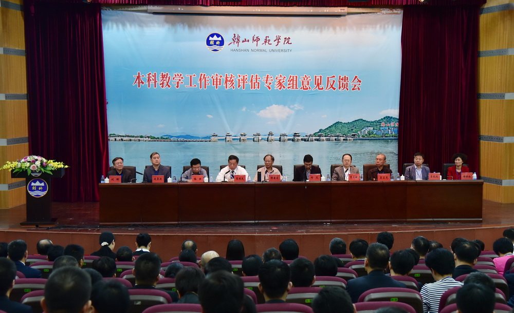

11月15日下午，韩山师范学院本科教学工作审核评估专家组意见反馈会在伟南国际会议中心举行。教育部审核评估专家组组长、南京师范大学副校长傅康生教授，副组长、湖北大学原校长熊健民教授，专家组成员北京外国语大学副校长贾文键教授，江苏大学副校长梅强教授，广州美术学院原副校长吴卫光教授，浙江师范大学人力资源部主任、人事处处长赵雷洪教授，天津职业技术师范大学教务处处长宣兆成教授，广州大学教育学院院长刘晖教授，华南师范大学教育信息技术学院副院长谢幼如教授，省教育厅高等教育处处长郑文，专家组秘书、项目管理员等出席会议，我校领导幸小涛、陈树思、林光英、黄文勇、陈亚林、黄景忠以及全体中层干部，教务处、评建办全体工作人员，专家联络员参加了会议。会议由熊健民教授主持。
专家组组长傅康生教授代表专家组反馈了评估总体情况，对学校本科教学工作给予充分肯定。专家组在为期四天的考察中，共听课看课85门次，走访了所有本科教学学院和18个职能部门；与6位校领导深度访谈了11人次，召开45场学生和教师座谈会；抽样调查了2013届毕业生的职业发展状况；考察了图书馆、教室、实验室等场所，走访了2个校外实习基地和就业单位；调阅了22个专业1004份毕业论文或毕业设计、31 门课程1791份试卷； 查阅了教学质量等会议纪要、教学改革统领性文件、教学大纲、听课评课记录等其他材料39份。
专家组认为，学校办学方向明确，以习近平新时代中国特色社会主义思想为指导，坚持社会主义办学方向，坚持立德树人，办学定位和培养目标体现了国家战略、使命担当和学校传统，适应了国家和区域经济社会发展的需求；人才培养体系较为完备，教学改革措施得力，人才培养成效显著；学校积极挖掘各种教学资源，为学校人才培养工作提供有效保障，较好地满足了教学需求；教学管理平稳有序，学生学习效果好，学校的培养过程有效支撑了培养目标的达成。人才培养社会评价较高，用人单位和学生满意度高。特别是学校一直坚持教师教育办学传统，并在新时代寻求改革突破，专家组感受深刻。
值得肯定之处在于学校办学目标明确，人才培养中心地位巩固；学校高度重视师资队伍建设，师德师风建设扎实有效；学校重视教学资源建设，保障本科教学的顺利开展；深化人才培养模式改革，构建多样化、开放式人才培养体系，着力培养高素质应用型人才；坚持以生为本育人理念，始终把立德树人放在办学首位，提升学风建设水平；坚持质量立校，重视教学质量保障体系建设。
同时，在以下方面需要改进：进一步加强本科教学工作的顶层设计，强化人才培养定位与目标的落实；切实加强师资队伍建设，着力提升教师职业能力；教学经费投入需要进一步扩大，基本办学条件有待改善，网络化教学资源不足；课堂教学方法有待改进，考试考核改革有待进一步加强，创新创业教育受益面有限；进一步加强学生的学业指导和就业指导，助力学生个性化成长；进一步完善质量保障体系，健全反馈和持续改进机制，加强教学管理队伍建设。特别强调必须进一步改革绩效考核制度，落实教学中心地位，彰显教师主体地位，确实保护和调动教师教学投入热情。
随后，傅康生教授、熊健民教授、贾文键教授、梅强教授、吴卫光教授、赵雷洪教授、宣兆成教授、刘晖教授、谢幼如教授等专家组成员以问题为导向，根据评估考察情况逐一进行意见反馈，就办学定位与人才培养目标明确、办学特色凝练、学生个性发展、人才培养方案修订、师资队伍建设、本科人才国际视野的培养和拓展、校内网络资源建设、教学资源丰富、质量保障体系完善、学生整体考研率提升、实践实验教学体系优化、教育教学信息化的建设与应用、教师教育的改革创新、管理队伍的建设和能力提高等问题提出了中肯的意见和建议。
郑文代表省教育厅对专家组的辛勤付出和高效率、高质量的工作表示衷心感谢。他指出，韩山师范学院在本科教学工作上取得了有目共睹的成绩，同时根据审核评估“五个度”的要求，学校的本科教学工作还有许多需要进一步改进之处。希望学校要切实贯彻落实审核评估“以评促建、以评促改”的要求，落实评估整改工作，真正实现学校的高质量发展。
他代表教育厅向学校提出了三点要求：一是全面贯彻落实习近平总书记系列讲话精神，进一步明确学校的办学方向和办学定位；二是准确定位，改革创新，加快学校内涵式发展；三是认真落实这次本科教学工作审核评估意见，加强整改工作，切实提高人才培养质量。
党委副书记、校长陈树思代表学校向各位专家的辛勤付出、悉心指导和无私帮助表示衷心的感谢。陈树思表示，专家组客观公正地指出了我校本科教学工作存在的问题和不足，并提出了具有很强针对性和可操作性的意见建议，为学校进行了一次高端、精准的诊断与咨询，明确了学校提高人才培养质量的方向，鼓舞了我们办好教师教育特色鲜明，创新服务能力较强，社会影响力较大的高水平本科师范院校的信心。对于各位专家提出的问题、意见和建议，学校诚恳接受并将坚决抓好整改落实。
接下来，学校将按照专家组的意见全面梳理、总结、分析、研究，坚持问题导向，着眼长远机制建设，采取有力措施扎实做好整改工作。全校师生将以此次评估为重要契机，坚持“以评促建、以评促改、以评促管、评建结合、重在建设”的方针，精准发力，真抓实干，把专家意见转化为促进教学质量提高的成果，把审核评估以评促建的成效落实到学校的人才培养中，全面提升学校本科教学工作水平，促进学校内涵式发展。（摄影：姚则强）